Rascunho para o San revisar. Os itens marcados “a confirmar” dependem da logística do time.Draft for San to review. Items marked “to be confirmed” depend on team logistics.
Guia de prova · material exclusivo CMTeamRace guide · CMTeam athletes only
IRONMAN 70.3North Carolina 2026
Sábado, 17 de outubro · Wilmington, NCSaturday, October 17 · Wilmington, NC
Race week chegou. North Carolina não é uma prova de força: é uma prova de consciência. Começa fria, com a água te despertando. Na bike, o vento conversa e pede paciência. Na corrida, o sol volta, a sombra do lago ajuda e o calor é leve, quase um presente depois de um verão inteiro treinando em Miami.
Race week is here. North Carolina is not a race of strength: it is a race of awareness. It starts cold, with the water waking you up. On the bike, the wind talks and asks for patience. On the run, the sun comes back, the shade around the lake helps, and the heat is mild, almost a gift after a whole summer of training in Miami.
Aqui está tudo o que você precisa para o fim de semana: a agenda do time, a logística oficial de 2026, o plano de cada etapa e as regras que mais custam tempo. O que precisava ser feito, já foi feito. Agora é executar com calma.
Here is everything you need for the weekend: the team schedule, the official 2026 logistics, the plan for each leg, and the rules that cost the most time. What had to be done is done. Now it is about executing with calm.
San Palma · CMTeam a confirmarto be confirmed
1,9 km1.2 minatação · a favor da maréswim · with the tide
21,1 km13.1 micorrida · 2 voltas no lagorun · 2 laps of the lake
01 · Agenda do timeTeam schedule
O fim de semanaThe weekend
Horários oficiais do IRONMAN (atualizados em 16/09) e os encontros do time, em destaque vermelho. Mudou algo? O grupo do WhatsApp sempre tem a última palavra.
Official IRONMAN times (updated Sept 16) plus team meet-ups, highlighted in red. If anything changes, the WhatsApp group always has the final word.
Quinta, 15 de outubroThursday, October 15
14h2:00 PM – 19h7:00 PM
Check-in do atleta e retirada do chip. Leve documento com foto e o QR code da inscriçãoAthlete check-in and timing chip pick-up. Bring photo ID and your registration QR code
Aloft · Atlantic Room
15h3:00 PM
Time CMTeam: briefing oficial juntos e, logo depois, check-in do time. No check-in, todos escolhem o mesmo horário de bike check-in de sexta (14h)CMTeam: official briefing together, then team check-in. At check-in, everyone picks the same Friday bike check-in slot (2:00 PM)a confirmarto be confirmed
Aloft · Outdoor Expo Area
16h4:00 PM
Q&A com a diretora de prova (opcional, não substitui o briefing)Q&A with the Race Director (optional, does not replace the briefing)
Aloft · Outdoor Expo Area
17h5:00 PM
Athlete Briefing, segundo horário. É obrigatório assistir a umAthlete Briefing, second session. Attending one is mandatory
Aloft · Outdoor Expo Area
18h6:00 PM
Yoga no Battleship (opcional, com inscrição)Yoga on the Battleship (optional, registration required)
USS North Carolina
18h306:30 PM
Time CMTeam: jantar do time (opcional)CMTeam: team dinner (optional)a confirmarto be confirmed
local no grupo do WhatsApplocation in the WhatsApp group
Sexta, 16 de outubroFriday, October 16
7h107:10 AM
Time CMTeam: retirada das mochilas com o RobérioCMTeam: backpack pick-up with Robérioa confirmarto be confirmed
Hanover Seaside Club
7h307:30 AM
Time CMTeam: reconhecimento a pé da saída da natação até a T1, sem entrar na águaCMTeam: walk-through from the swim exit to T1, without getting in the watera confirmarto be confirmed
Wrightsville Beach
8h8:00 AM
Time CMTeam: shake-out run, ~20 min leveCMTeam: shake-out run, ~20 min easya confirmarto be confirmed
Wrightsville Beach
9h9:00 AM – 15h303:30 PM
Último dia de check-in (prioridade AWA até 12h). Sem check-in no sábadoLast check-in window (AWA priority until noon). No check-in on Saturday
Aloft · Atlantic Room
10h10:00 AM · 11h3011:30 AM · 14h302:30 PM
Athlete Briefing, para quem não assistiu na quintaAthlete Briefing, for those who missed Thursday
Aloft · Outdoor Expo Area
14h2:00 PM
Time CMTeam: bike check-in OBRIGATÓRIO no horário agendado. A bike dorme na T1. O Robério ajuda nos últimos ajustes. A sacola azul pode ficar jáCMTeam: MANDATORY bike check-in at the booked time. The bike stays overnight in T1. Robério helps with last adjustments. The blue bag can be dropped nowa confirmarto be confirmed
T1 · Wrightsville Beach Park
15h3:00 PM
Time CMTeam: entrega da sacola vermelha (corrida). Fecha às 16h e no sábado ninguém entra na T2CMTeam: red run bag drop-off. Closes at 4:00 PM, and nobody gets into T2 on Saturday
T2 · Cape Fear Community College
15h303:30 PM
Time CMTeam: reunião final com o San: dúvidas e últimos ajustesCMTeam: final meeting with San: questions and last tips
saída da T2T2 exit
18h306:30 PM
Time CMTeam: jantar do time (opcional). Jantar cedo, cama cedoCMTeam: team dinner (optional). Early dinner, early to beda confirmarto be confirmed
local no grupo do WhatsApplocation in the WhatsApp group
Sábado, 17 de outubro · dia de provaSaturday, October 17 · race day
3h453:45 AM – 5h155:15 AM
Shuttle só para atletas, do centro para a T1Athlete-only shuttle from downtown to T1
N 3rd St com Brunswick StN 3rd St & Brunswick St
4h304:30 AM
Time CMTeam: encontro no ponto do shuttleCMTeam: meet at the shuttle stopa confirmarto be confirmed
N 3rd St com Brunswick StN 3rd St & Brunswick St
4h304:30 AM – 6h256:25 AM
Transição aberta. Às 6h25 todo mundo foraTransition open. Everyone out by 6:25 AM
T1 · Wrightsville Beach Park
5h455:45 AM
Time CMTeam: encontro na T1 para pegar juntos o shuttle até a largada. Último shuttle às 6h30CMTeam: meet at T1 to take the shuttle to the swim start together. Last shuttle at 6:30 AMa confirmarto be confirmed
T1 · Wrightsville Beach Park
7h107:10 AM
Largada age group, rolling start por tempo previstoAge group rolling swim start, seeded by expected time
Hanover Seaside Club
11h3011:30 AM – 17h5:00 PM
Retirada da sacola branca (manhã). Comida pós-prova a partir das 11hWhite morning clothes bag pick-up. Post-race food from 11:00 AM
Water Street Park
13h451:45 PM – 17h305:30 PM
Check-out da bike e das sacolas (pulseira obrigatória)Bike and gear bag check-out (wristband required)
T2 · Cape Fear Community College
14h2:00 PM – 15h3:00 PM
Time CMTeam: bikes e sacolas com o Robério para voltar a Miami. Prazo final 15h15CMTeam: bikes and bags to Robério for the trip back to Miami. Hard deadline 3:15 PMa confirmarto be confirmed
saída da T2T2 exit
16h304:30 PM
Premiação e vagas para o Mundial 70.3 de 2027 (Chattanooga). Tem que estar presente para aceitar a vagaAwards and 2027 70.3 World Championship slots (Chattanooga). You must be present to accept a slot
Aloft · Indoor Ballroom
18h6:00 PM
Time CMTeam: celebração (opcional)CMTeam: celebration (optional)a confirmarto be confirmed
local no grupo do WhatsApplocation in the WhatsApp group
19h307:30 PM
Time CMTeam: RiverWalk e sorveteCMTeam: RiverWalk and ice creama confirmarto be confirmed
Downtown RiverWalk · Kilwins
Encontro do time CMTeamCMTeam team meet-upa confirmarto be confirmeddepende da logística do timedepends on team logistics
Bike check-in com hora marcadaBike check-in by appointment
Novidade de 2026: no check-in do atleta você escolhe o horário de levar a bike para a T1 na sexta, e esse horário é conferido. Para irmos juntos com o Robério, todos escolhem o mesmo horário.
New for 2026: at athlete check-in you choose your Friday bike drop-off time at T1, and that time is checked. To go together with Robério, everyone picks the same slot.
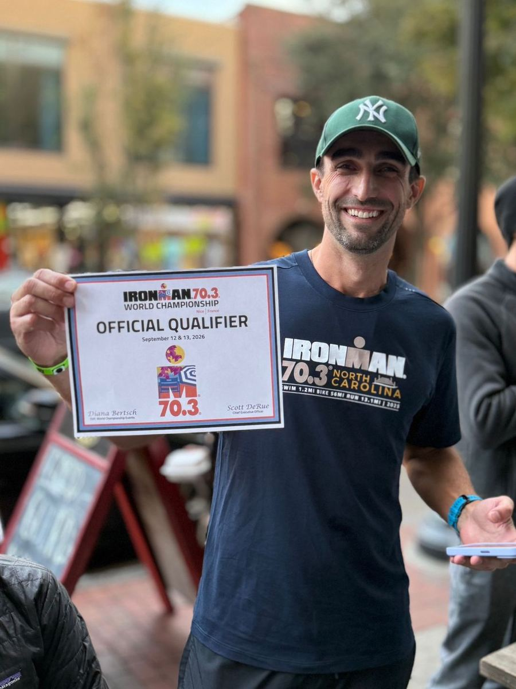
Vaga para o Mundial 70.3 em North Carolina 202570.3 World Championship slot at North Carolina 2025
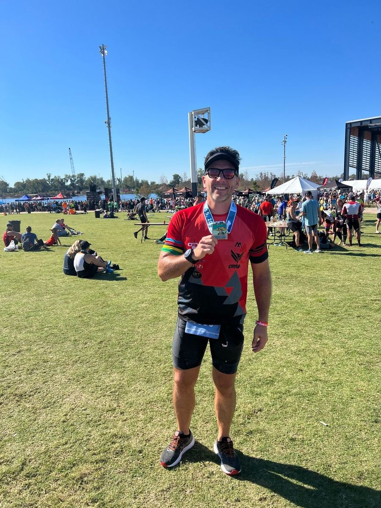
Medalha no peitoMedal on
02 · A prova em númerosThe race in numbers
Plana, rápida e com ventoFlat, fast and windy
Natação ponto a ponto a favor da maré, bike de uma volta da praia até o centro, corrida em duas voltas pelo Greenfield Lake. O que decide North Carolina não é a altimetria: é a disciplina de potência no vento e a paciência na corrida.
Point-to-point swim with the tide, a one-loop bike from the beach to downtown, and a two-lap run around Greenfield Lake. What decides North Carolina is not the elevation: it is power discipline in the wind and patience on the run.
NataçãoSwim
1,9 km1.2 mi
Banks Channel, Wrightsville Beach. Rolling start por tempo previsto.Banks Channel, Wrightsville Beach. Rolling start by expected time.
Corte: 1h10 a partir da sua entrada na águaCut-off: 1:10 from your own start
Bike
90 km · D+ 196 m56 mi · 643 ft gain
Uma volta, de Wrightsville Beach até o centro de Wilmington. As pontes são as únicas subidas.One loop, from Wrightsville Beach to downtown Wilmington. The bridges are the only climbs.
Corte: 5h30 (natação + T1 + bike). Intermediário: posto 3, Cut-off: 5:30 (swim + T1 + bike). Intermediate: aid station 3, km 76mi 47, 13h1:00 PM
CorridaRun
21,1 km · D+ 80 m13.1 mi · 261 ft gain
Centro de Wilmington e duas voltas no Greenfield Lake, quase toda na sombra.Downtown Wilmington and two laps of Greenfield Lake, mostly in the shade.
Cortes: Cut-offs: km 11,2mi 6.97àsat15h203:20 PM · km 18,2mi 11.3àsat16h204:20 PM · total 8h308:30 total
O que mudou desde 2025What changed since 2025
A corrida agora tem duas voltas no Greenfield Lake, com retirada de pulseira para a segunda volta. O shuttle do centro para a T1 começa mais cedo, às 3h45, e vai só até 5h15. O bike check-in passou a ter hora marcada. A ponte Isabel Holmes também entrou na lista de trechos sem posição aero.
The run now has two laps of Greenfield Lake, with a wristband pick-up for the second lap. The downtown-to-T1 shuttle starts earlier, at 3:45 AM, and runs only until 5:15 AM. Bike check-in is now by appointment. The Isabel Holmes Bridge was added to the no-aero sections.
03 · LogísticaLogistics
Duas transições, três sacolasTwo transitions, three bags
A natação acaba em Wrightsville Beach, e a bike, no centro. São duas transições separadas, a 20 minutos de carro uma da outra. Quem entende isso no sábado de manhã não corre atrás de nada.
The swim finishes at Wrightsville Beach and the bike finishes downtown. They are two separate transitions, 20 minutes apart by car. Knowing this on Saturday morning means you never chase anything.
Os lugaresThe places
Village, check-in, briefings, premiaçãoVillage, check-in, briefings, awards
Cape Fear Community College Lot, 610 N Front St. O estacionamento é inclinado: cuidado ao pendurar a bikeCape Fear Community College Lot, 610 N Front St. The lot slopes downhill: rack your bike carefully
ChegadaFinish
Water Street Park, Water St com Princess StWater Street Park, Water St & Princess St
Shuttle do atletaAthlete shuttle
N 3rd St com Brunswick St, uma quadra a leste da T2. Garagem mais próxima: 155 Brunswick St (fechada das 8h30 às 14h)N 3rd St & Brunswick St, one block east of T2. Closest garage: 155 Brunswick St (closed 8:30 AM – 2:00 PM)
T2 · entrada da bike e saída da corridaT2 · bike in and run out · toque para ampliartap to enlarge
As três sacolasThe three bags
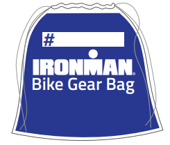
Azul · bikeBlue · bike
Fica no seu rack na T1. Na saída da água, tudo de natação vai para dentro dela: wetsuit, touca, óculos. Amarre bem. Ela é levada para a T2.Stays at your rack in T1. After the swim, all swim gear goes inside: wetsuit, cap, goggles. Tie it tight. It is taken to T2.
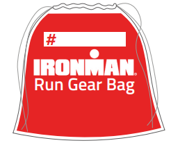
Vermelha · corridaRed · run
Entregue na sexta, na T2, até as 16h. No sábado ninguém entra na T2, então ela vai pronta e completa.Dropped at T2 on Friday by 4:00 PM. Nobody gets into T2 on Saturday, so it goes in ready and complete.
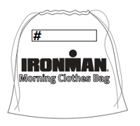
Branca · manhãWhite · morning
Deixe na largada da natação com o que você quer na chegada. Retirada no Water Street Park. Nada de valor e nada que não caiba nela.Drop it at the swim start with what you want at the finish. Pick it up at Water Street Park. Nothing valuable and nothing that does not fit inside.
A manhã, passo a passoThe morning, step by step
Acordar com tempo. Café da manhã que você já usou nos longões, cerca de 3 horas antes da sua largada real.Wake up with time to spare. A breakfast you have already used before long sessions, about 3 hours before your actual start.
4h304:30 AM: encontro do time no ponto do shuttle (N 3rd com Brunswick). Pulseira, chip e touca com você, os três. O último shuttle sai às 5h15.4h304:30 AM: team meets at the shuttle stop (N 3rd & Brunswick). Wristband, chip and cap with you, all three. The last shuttle leaves at 5:15 AM.
Na T1: a bike está lá desde sexta. Calibrar pneus, garrafas e nutrição na bike, câmbio na marcha de saída, ciclocomputador ligado. Capacete, sapatilha e óculos ao lado da bike, nunca presos nela. A transição fecha às 6h25.At T1: your bike has been there since Friday. Pump tires, bottles and nutrition on the bike, gear set for the start, bike computer on. Helmet, shoes and glasses next to the bike, never clipped to it. Transition closes at 6:25 AM.
5h455:45 AM: encontro na T1 e shuttle juntos até a largada. Todo mundo embarcado até 6h30. Também dá para ir a pé, 2,3 km1.42 mi, longe da pista.5h455:45 AM: meet at T1 and take the shuttle together to the start. Everyone on board by 6:30 AM. You can also walk 2.3 km1.42 mi, off the road.
Na largada: sacola branca no local indicado, banheiro, aquecimento fora da água (5 a 10 minutos de mobilidade de ombro e caminhada rápida).At the start: white bag at the drop area, bathroom, warm-up out of the water (5 to 10 minutes of shoulder mobility and brisk walking).
Corral pelo seu tempo previsto de natação. Seu tempo começa quando você cruza o tapete.Seed yourself by expected swim time. Your race time starts when you cross the mat.
Ninguém entra na água antes da largadaNobody gets in the water before the start
Por causa da correnteza da maré, quem tentar nadar antes da largada de sábado é desclassificado. Em 2026 não existe nado oficial de reconhecimento. Aquecimento é fora da água.
Because of the tidal currents, anyone who tries to swim before Saturday’s start is disqualified. There is no official practice swim in 2026. Warm up out of the water.
O que não pode faltar em cada pontoWhat you must have at each point
Na transição: pulseira, touca, chip no tornozelo esquerdo. Não use o número na natação. Na bike: adesivo do quadro visível dos dois lados, adesivo do capacete na frente, capacete afivelado sempre que tocar na bike. Na corrida: número na frente do corpo. Sem fones em etapa nenhuma.
In transition: wristband, cap, chip on your left ankle. No bib on the swim. On the bike: frame sticker visible on both sides, helmet sticker on the front, helmet buckled whenever you touch the bike. On the run: bib on the front. No headphones at any point.
04 · Natação · 1,9 km1.2 miSwim · 1.9 km1.2 mi
A água despertaThe water wakes you up
Ponto a ponto no Banks Channel, um canal de água salgada ligado à Intracoastal, não o mar aberto. A maré enchente empurra a favor: é uma natação rápida. Larga no Hanover Seaside Club e chega perto do Seapath Yacht Club.
Point-to-point in Banks Channel, a saltwater channel connected to the Intracoastal Waterway, not the open ocean. The incoming tide pushes you along: it is a fast swim. It starts at Hanover Seaside Club and finishes near Seapath Yacht Club.
FormatoFormat
Rolling start por tempo previsto, grupos pequenos a cada poucos segundosRolling start by expected time, small groups every few seconds
PercursoCourse
Siga a linha de boias de visada. As boias de curva são vermelhasFollow the line of sighting buoys. Turn buoys are red
ÁguaWater
Em 2025 ficou entre 19 e 22 °C66 and 72 °F. Wetsuit liberado até 24,5 °C76.1 °F. A temperatura oficial sai na manhã da provaIn 2025 it was 19 to 22 °C66 to 72 °F. Wetsuit legal up to 24.5 °C76.1 °F. The official temperature is announced race morning
Saída da águaSwim exit
Escada com voluntários e strippers para tirar o wetsuit. Depois, corrida de ~450 m~500 yd até a T1Stairs with volunteers and wetsuit strippers. Then a ~450 m~500 yd run to T1
ProibidoNot allowed
Nadadeira, palmar, luva, boia, snorkel. Touca oficial por cima de qualquer outraFins, paddles, gloves, pull buoys, snorkels. The official cap goes over any other cap
Como nadar North CarolinaHow to swim North Carolina
A água fria assusta nos primeiros segundos. É normal. Controle a respiração e deixe o corpo entender. Em um ou dois minutos ele se adapta e flui.The cold water is a shock for the first few seconds. That is normal. Control your breathing and let your body catch up. Within a minute or two it adapts and flows.
Saída controlada. Sem sprint nos primeiros 200 m. A maré vai te dar velocidade de qualquer jeito.Controlled start. No sprint in the first 200 m. The tide will give you speed anyway.
Cole na linha de boias e use o vácuo de quem nada no seu ritmo. Na natação, nadar atrás é permitido e economiza energia.Stay close to the buoy line and draft off swimmers at your pace. Drafting is legal in the swim and saves energy.
Sighting calmo, a cada 8 a 10 braçadas. A correnteza desvia; corrigir demais custa mais que o desvio.Calm sighting every 8 to 10 strokes. The current pushes you off line; over-correcting costs more than the drift.
Nos últimos 5 minutos, pernada mais ativa para mandar sangue para as pernas antes da escada.In the last 5 minutes, kick a bit more to send blood to your legs before the stairs.
Saia da água fresco. Se a natação tirou algo de você, você nadou a natação de outra pessoa.Come out of the water fresh. If the swim took something out of you, you swam someone else’s race.
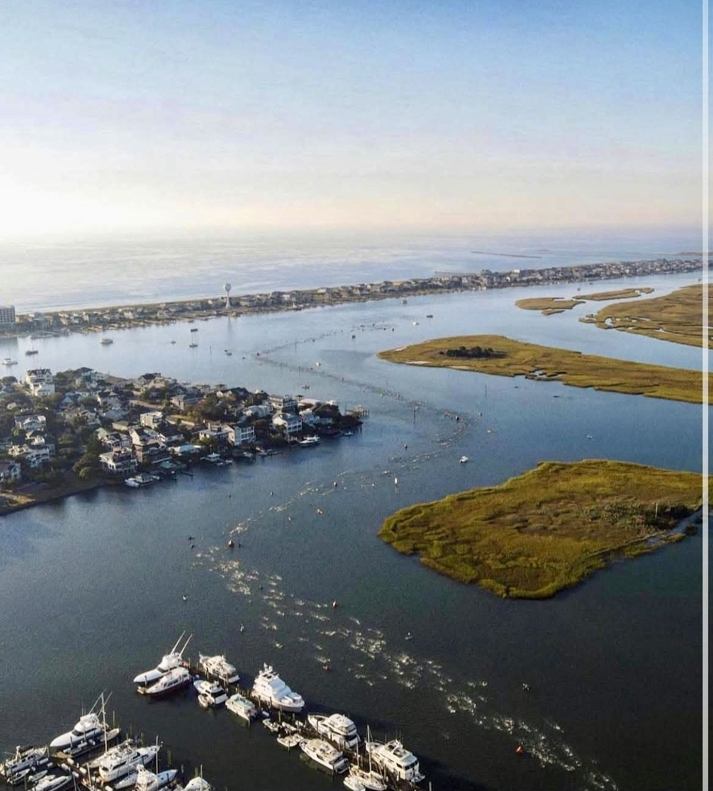
A natação vista de cima: a linha de atletas no Banks ChannelThe swim from above: the line of swimmers in Banks Channel
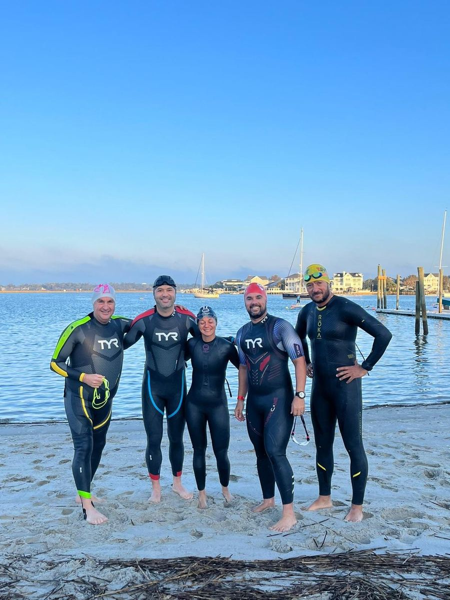
Banks Channel, manhã fria e água calmaBanks Channel, cold morning and calm water
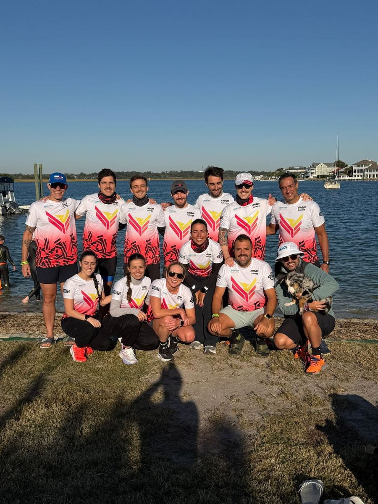
O time na largada, Wrightsville BeachThe team at the swim start, Wrightsville Beach
T1 · da água para a bikeT1 · water to bike
Saída pela escada. Strippers ajudam a tirar o wetsuit, se você quiser.Exit up the stairs. Strippers help you out of your wetsuit if you want.
Corrida de ~450 m~500 yd até a T1. O chip continua no tornozelo.Run ~450 m~500 yd to T1. The chip stays on your ankle.
No rack: tudo de natação dentro da sacola azul, amarrada e deixada no seu espaço.At your rack: all swim gear into the blue bag, tied and left in your spot.
Capacete afivelado antes de tirar a bike do rack. Óculos, sapatilha, nutrição no bolso.Helmet buckled before you take the bike off the rack. Glasses, shoes, nutrition in your pocket.
Respire. A T1 é o primeiro reset do dia: a natação acabou e não vai junto para a bike.Breathe. T1 is the first reset of the day: the swim is over and it does not come with you on the bike.
Empurre a bike até a linha de monte e só suba depois dela.Push the bike to the mount line and only get on after it.
Natação · percurso oficialSwim · official course · toque para ampliartap to enlarge
05 · Bike · 90 km56 mi
O vento ensina paciênciaThe wind teaches patience
Uma volta da praia até o centro, por estradas rurais. Plana e rápida, mas exposta. O vento de Wilmington não é o de Miami: é mais constante, sem rajadas, e cobra de quem acelera para manter a velocidade. Em 2025 ele veio de frente na ida para o norte e a favor na volta.
One loop from the beach to downtown on rural roads. Flat and fast, but exposed. The Wilmington wind is not the Miami wind: it is steadier, without gusts, and it punishes anyone who pushes harder to hold speed. In 2025 it was a headwind going north and a tailwind coming back.
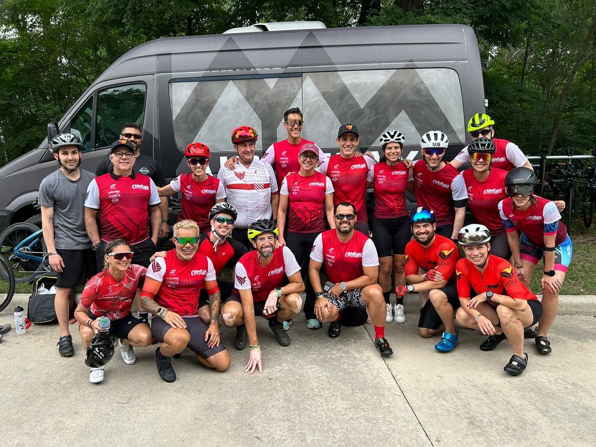
O time CMTeam no pedalThe CMTeam squad on the bike
O percurso por trechoThe course by section
01km 0 – 18mi 0 – 11
Saída e cidadeStart and city
Ponte levadiça de Wrightsville, Market St, College, MLK Pkwy, retorno da Hwy 133 e ponte Isabel Holmes. Muita gente junta.Wrightsville drawbridge, Market St, College, MLK Pkwy, the Hwy 133 turnaround and the Isabel Holmes Bridge. Crowded.
ConterHold back
Sentar, achar a potência-alvo, primeiro gole. Sem ultrapassar no impulso e respeitando as zonas sem aero e sem ultrapassagem.Settle in, find your target power, first sip. No impulse passing, and respect the no-aero and no-passing zones.
02km 18 – 45mi 11 – 28
Rodovia 421, idaHwy 421 northbound
Retas longas para o norte. Em 2025, vento de frente. Posto 1 perto do km 23.Long straights heading north. Headwind in 2025. Aid station 1 near mile 14.
SustentarSustain
Aero, constante, watts no alvo. Aceite a velocidade menor no vento: todo mundo perde a mesma coisa.Aero, steady, watts on target. Accept the lower speed into the wind: everyone loses the same.
03km 45 – 68mi 28 – 42
Laço do norteNorthern loop
Estradas rurais: Union Chapel, Rivenbark, Porter, Brinson, Borough, Blueberry. Mais curvas. Posto 2 perto do km 53. Proibido ultrapassar da Porter com Brinson até a Hwy 210.Rural roads: Union Chapel, Rivenbark, Porter, Brinson, Borough, Blueberry. More turns. Aid station 2 near mile 33. No passing from Porter/Brinson to Hwy 210.
AlimentarFuel
Alimentação e hidratação em dia, atenção nas curvas e no piso. Aqui se prepara a corrida.Stay on top of food and fluids, careful on turns and road surface. This is where you set up your run.
04km 68 – 88mi 42 – 55
Rodovia 421, voltaHwy 421 southbound
De volta para o sul, em 2025 com vento a favor. Posto 3 perto do km 76, com corte às 13h.Back south, with a tailwind in 2025. Aid station 3 near mile 47, cut-off at 1:00 PM.
SegurarHold the floor
Com vento a favor, não pare de pedalar: segure o piso da potência. Também não acelere demais: a corrida vem aí.With a tailwind, keep pedaling and hold the bottom of your power range. Do not overcook it either: the run is next.
05km 88 – 90mi 55 – 56
Ponte e T2Bridge and T2
Ponte Isabel Holmes (sem aero, sem ultrapassar), centro de Wilmington, desmonte.Isabel Holmes Bridge (no aero, no passing), downtown Wilmington, dismount.
PrepararPrepare
Últimos 10 minutos girando mais leve, último gole, soltar as pernas. A bike acabou; agora é outra prova.Spin easier for the last 10 minutes, last sip, loosen your legs. The bike is over; now it is a different race.
Intensidade: IF de 0,80 a 0,82Intensity: IF 0.80 to 0.82a confirmarto be confirmed
IF é a potência normalizada da etapa dividida pelo seu FTP. Entre 0,80 e 0,82 você pedala forte o bastante para fazer um bom tempo e controlado o bastante para correr os 21 km depois. O seu alvo individual vale mais que a referência do time.
IF is your normalized power for the leg divided by your FTP. Between 0.80 and 0.82 you ride hard enough for a good split and controlled enough to run the 21 km afterward. Your individual target overrides the team reference.
O alvo é média, não piso nem teto. Num percurso plano, a média sai fácil se você não brigar com o vento.The target is an average, not a floor or a ceiling. On a flat course the average comes easily if you do not fight the wind.
Nas pontes, o teto é 100% do FTP, a fronteira do A3. Passar disso numa rampa curta é a conta mais cara do dia.On the bridges, the ceiling is 100% of FTP, the top of A3. Going over it on a short ramp is the most expensive bill of the day.
Variabilidade baixa: VI até 1,05. Em percurso plano, VI alto é ego, não terreno.Low variability: VI up to 1.05. On a flat course, a high VI is ego, not terrain.
No vento contra, mesmos watts, menos velocidade. Quem aumenta os watts para manter a velocidade chega na corrida sem margem.Into the wind: same watts, less speed. Raising watts to hold speed means starting the run with nothing left.
Sem potenciômetro: FC como teto e PSE de 5 a 6 (de 0 a 10). FC é auditoria, não volante.No power meter: heart rate as a ceiling and RPE of 5 to 6 (out of 10). Heart rate is an audit, not a steering wheel.
Sem aero e sem ultrapassarNo aero, no passing
Proibido ficar em posição aero e ultrapassar na ponte levadiça de Wrightsville Beach e na ponte Isabel Holmes. Proibido ultrapassar no retorno da Hwy 133 para a MLK Pkwy e da Porter Rd com Brinson Rd até a Hwy 210. Quem desrespeitar pode ser desclassificado.
No aero position and no passing on the Wrightsville Beach drawbridge and the Isabel Holmes Bridge. No passing on the Hwy 133 turnaround onto MLK Pkwy, or from Porter Rd & Brinson Rd through Hwy 210. Violations can mean disqualification.
Regras de bike que custam tempoBike rules that cost time
Zona de vácuo: 12 mDraft zone: 12 mSeis bikes de distância entre a sua roda da frente e a traseira de quem vai à frente.Six bike lengths between your front wheel and the rear wheel ahead.Azul · 2 minBlue · 2 min
Ultrapassagem em 25 sPass within 25 sEntrou na zona, completa a passagem em 25 segundos, sempre pela esquerda, e volta para a direita.Once in the zone, complete the pass in 25 seconds, always on the left, then move back right.Azul · 2 minBlue · 2 min
Foi ultrapassadoBeing passedSaia da zona na hora, ficando para trás. Repassar antes de sair dela é penalidade.Drop back out of the zone immediately. Re-passing before you are out is a penalty.Amarelo · 30 sYellow · 30 s
Lado direitoKeep rightSempre à direita, em fila única. Lado a lado é bloqueio.Always on the right, single file. Side by side is blocking.Amarelo · 30 sYellow · 30 s
Lixo fora do postoLitteringEmbalagem, garrafa e até a pontinha do gel, só dentro da zona do posto.Wrappers, bottles, even the gel tab: only inside the aid station zone.Azul · 2 minBlue · 2 min
CapaceteHelmetAfivelado sempre que estiver com a bike, inclusive na transição.Buckled whenever you have your bike, including in transition.DSQ
GarrafasBottlesNa frente, no máximo 2 litros somados. Atrás, no máximo 2 garrafas de 1 litro. Dentro do quadro não conta.Front-mounted: 2 liters max combined. Rear: max 2 bottles of 1 liter. Inside the frame triangle does not count.IlegalIllegal
Três cartões azuisThree blue cardsDesclassificação.Disqualification.DSQ
Levou cartão? Pare na próxima tenda de penalidade, diga a cor do cartão, assine e cumpra o tempo. Não discuta com o árbitro. Não parar na tenda é desclassificação.
Got a card? Stop at the next penalty tent, state the card color, sign in and serve the time. Do not argue with the referee. Skipping the tent means disqualification.
Postos de apoioAid stations
1 · km 23mi 142 · km 53mi 333 · km 76mi 47
Todos com banheiro. Oferecem água, Precision Fuel & Hydration, Maurten Gel 100 e 100 CAF, Maurten Solid 160 e 160 C, barras e banana. Ninguém passa pelo posto em aero: mão no freio, olho no voluntário, aponte o que quer.
All with toilets. They offer water, Precision Fuel & Hydration, Maurten Gel 100 and 100 CAF, Maurten Solid 160 and 160 C, bars and bananas. Nobody rides through an aid station in aero: hands on the brakes, eyes on the volunteer, point at what you want.
Só o que você treinouOnly what you trained with
O que está no posto é reposição, não plano. O seu plano de nutrição é individual e foi construído com o que você usou nos longões. Produto novo no dia da prova é o jeito mais rápido de transformar um bom pedal numa corrida andando.
What is at the aid station is backup, not the plan. Your nutrition plan is individual and built from what you used on long sessions. A new product on race day is the fastest way to turn a good ride into a walk.
T2 · da bike para a corridaT2 · bike to run
Desmonte antes da linha. Empurre a bike até o seu rack e pendure antes de tirar o capacete. O estacionamento é inclinado: pendure com cuidado.Dismount before the line. Push the bike to your rack and hang it before taking off your helmet. The lot slopes: rack carefully.
Sacola vermelha: material de bike dentro, tênis, boné e cinto com o número virado para a frente.Red bag: bike gear in, then shoes, cap and race belt with the bib facing forward.
Protetor solar disponível na T2.Sunscreen is available in T2.
Segundo reset do dia. A bike acabou, boa ou ruim. O que vem agora é outra prova.Second reset of the day. The bike is over, good or bad. What comes next is a different race.
Bike · altimetria e direçõesBike · elevation and directions · toque para ampliartap to enlarge
06 · Corrida · 21,1 km13.1 miRun · 21.1 km13.1 mi
O sol lembra quem você éThe sun reminds you who you are
Novo em 2026: sai da T2, desce pela Front St e faz duas voltas no Greenfield Lake, entre árvores com musgo e quase toda na sombra. Depois volta pela Front St até a chegada no Water Street Park. Quase plana, com leves ondulações em volta do lago.
New for 2026: out of T2, south on Front St and two laps around Greenfield Lake, under moss-draped trees and mostly in the shade. Then back up Front St to the finish at Water Street Park. Nearly flat, with gentle rollers around the lake.
01km 0 – 4mi 0 – 2.5
Saída e Front StStart and Front St
T2, Hanover St, calçadão do rio, Water St e Front St para o sul. Torcida forte.T2, Hanover St, the riverfront boardwalk, Water St and Front St heading south. Big crowds.
ConterHold back
As pernas ainda são de ciclista. Passada curta, cadência alta, ritmo abaixo do alvo nos primeiros 15 a 20 minutos.Your legs are still bike legs. Short stride, high cadence, below target pace for the first 15 to 20 minutes.
02km 4 – 11,2mi 2.5 – 7
Lago, 1ª voltaLake, lap 1
Lake Shore Dr e o caminho em volta do Greenfield Lake. Sombra, leves ondulações.Lake Shore Dr and the path around Greenfield Lake. Shade, gentle rollers.
AssentarSettle
Aqui o corpo encontra o ritmo de corrida. Trave no pace-alvo e confira a sensação. Ritmo, não ego.This is where your body finds its running rhythm. Lock onto target pace and check in with yourself. Rhythm, not ego.
03km 11,2 – 18,2mi 7 – 11.3
Lago, 2ª voltaLake, lap 2
Pulseira na entrada da segunda volta. Corte às 15h20 no início dela e às 16h20 na saída.Wristband at the start of lap 2. Cut-offs at 3:20 PM at its start and 4:20 PM at its end.
SustentarSustain
Mesma volta, mesmo ritmo. Caminhada curta nos postos, se precisar, faz parte do plano. Mente ocupada com o próximo posto.Same lap, same pace. A short walk through aid stations, if needed, is part of the plan. Keep your mind on the next station.
04km 18,2 – 21,1mi 11.3 – 13.1
Front St e chegadaFront St and finish
Saída do lago, Front St para o norte e Water Street Park.Out of the lake, north on Front St to Water Street Park.
LiberarLet it go
É aqui que a prova é decidida. Postura alta, respiração, o que sobrou. Na reta final, nada guardado.This is where the race is decided. Tall posture, breathing, whatever is left. In the final stretch, hold nothing back.
Como correr North CarolinaHow to run North Carolina
Divida a meia em três blocos: conservar, assentar, levar para casa.Break the half into three blocks: conserve, settle, bring it home.
A perna pesada dos primeiros quilômetros não é diagnóstico. É a fisiologia trocando de tarefa.Heavy legs in the first kilometers are not a diagnosis. It is your physiology switching tasks.
Na sombra do lago a sensação de esforço cai e o ritmo sobe sem você perceber. Corra pela régua, não pela sensação.In the shade of the lake, perceived effort drops and pace creeps up without you noticing. Run by the numbers, not by feel.
Da metade em diante, se precisar, caminhe 20, 30 ou até 40 segundos nos postos. Com propósito: beber de verdade, gelo, esponja. Não é fraqueza, é inteligência.From halfway on, if you need to, walk 20, 30 or even 40 seconds through aid stations. With purpose: drink properly, ice, sponge. It is not weakness, it is intelligence.
Calor leve não é desculpa para pular a hidratação. Hidratação por plano, não por sede.Mild heat is no excuse to skip fluids. Drink to plan, not to thirst.
Reta final: a torcida puxa. Aproveite a energia, mas mantenha a forma.Final stretch: the crowd pulls you. Use the energy, but keep your form.
Doze postos, todos com banheiro: água, Precision Fuel & Hydration, Coca-Cola, Maurten Gel 100 e 100 CAF, Maurten Solid 160 e 160 C, barras, chips, pretzel, banana e laranja. O primeiro posto é reforçado em hidratação. Descarte só dentro da zona do posto.
Twelve stations, all with toilets: water, Precision Fuel & Hydration, cola, Maurten Gel 100 and 100 CAF, Maurten Solid 160 and 160 C, bars, chips, pretzels, bananas and oranges. The first station is heavy on fluids. Discard only inside the aid station zone.
Regras de corridaRun rules
Número na frente, visível o tempo todo. Dobrar, cortar ou esconder o número é desclassificação.Bib on the front, visible at all times. Folding, cutting or hiding it means disqualification.
Sem torso nu. Zíper pode ficar aberto, mas preso embaixo.No bare torso. The zipper can be open, but connected at the bottom.
Ninguém de fora corre com você, nem por 50 metros. Atleta que ainda está na prova pode.No outsiders running with you, not even for 50 meters. Athletes still racing can.
Ninguém cruza a chegada com você: nem filho, nem cônjuge, nem cachorro. É desclassificação automática.Nobody crosses the finish line with you: not your kid, not your partner, not your dog. It is an automatic DSQ.
Na corrida não existe tenda: a penalidade se cumpre na hora, no local.There is no penalty tent on the run: penalties are served on the spot.
Corrida · altimetria e direçõesRun · elevation and directions · toque para ampliartap to enlarge
Onde o time torceWhere the team cheersa confirmarto be confirmed
A Front St é o melhor ponto: os atletas passam por ela na ida (por volta do km 2) e na volta (por volta do km 19). A segunda zona fica na chegada, no Water Street Park.
Front St is the best spot: athletes pass it on the way out (around mile 1.5) and on the way back (around mile 12). The second zone is the finish at Water Street Park.
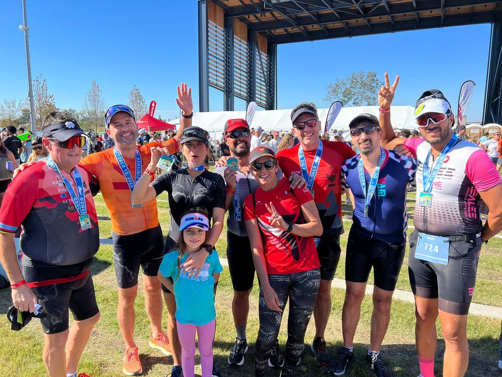
Medalhas no peito, North Carolina 2022Medals on, North Carolina 2022
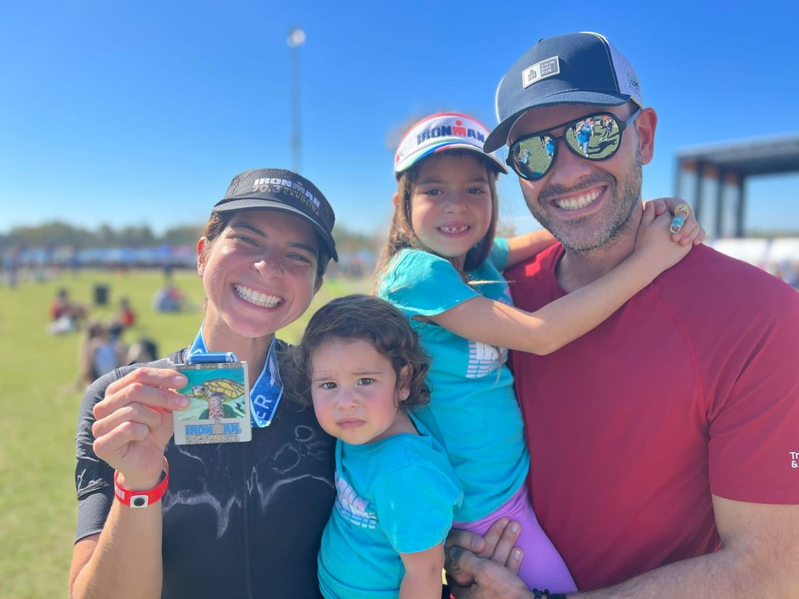
Quem torce também faz parte da provaThe people cheering are part of the race too
07 · ClimaWeather
Começa fria, termina quenteStarts cold, ends warm
Médias históricas de meados de outubro em Wilmington. A previsão real entra aqui na semana da prova.
Historical mid-October averages for Wilmington. The real forecast goes here during race week.
LargadaStart
13 °C56 °F
Escuro até perto das 7h15. Casaco velho ou na sacola branca.Dark until about 7:15 AM. Old sweatshirt, or put it in the white bag.
ÁguaWater
20–22 °C68–72 °F
Wetsuit liberado provável. Confirmação na manhã da prova.Wetsuit-legal likely. Confirmed race morning.
Bike
15–21 °C59–70 °F
Vento constante. Manguito ou colete para os primeiros quilômetros, se estiver frio.Steady wind. Arm warmers or a vest for the first miles if it is cold.
CorridaRun
24 °C75 °F
Sol, sombra no lago. Gelo e água na cabeça antes de sentir calor.Sun, shade at the lake. Ice and water on your head before you feel hot.
Frio na largada, calor na corridaCold start, warm run
É a combinação clássica de erro: o atleta sai da bike com pouca água no corpo porque não sentiu sede, e a corrida cobra a diferença. Comece a beber desde o primeiro posto da bike.
This is the classic trap: athletes get off the bike under-hydrated because they never felt thirsty, and the run makes them pay. Start drinking from the first bike aid station.
08 · As últimas semanasThe final weeks
Afinar, não testarSharpen, do not test
Agora não existe mais o que ganhar em forma, só em clareza. O corpo já sabe o caminho. A mente, se estiver calma, vai apenas seguir.
There is no more fitness to gain now, only clarity. Your body already knows the way. If your mind is calm, it will simply follow.
TreinoTraining
Respeite o polimento. Na última semana não se ganha condicionamento.Respect the taper. You gain no fitness in the final week.
Ensaio geral de bike e corrida com o material de prova.Dress rehearsal ride and run with your race gear.
Conheça seus alvos: zonas, watts, FC e PSE.Know your targets: zones, watts, heart rate and RPE.
Mais importante estar descansado do que afiado. Não pule o dia de folga.Being rested matters more than being sharp. Do not skip your day off.
Race week
Sono como prioridade: 7 a 8 horas por noite.Sleep is the priority: 7 to 8 hours a night.
Hidratação em dia, além do que você perde nos treinos.Stay hydrated, on top of what you lose in training.
Use nos treinos os produtos que vai usar na prova. É treino de intestino.Use the products you will race with in training. It is gut training.
Comida normal, sem novidade. O máximo de tempo possível com os pés para cima.Normal food, nothing new. As much time off your feet as possible.
CabeçaMind
Reduza a pressão de fora, do jeito que der.Reduce outside pressure as best you can.
Foque no que você controla: atitude e plano de combustível.Focus on what you control: attitude and fueling plan.
Visualize: como é um grande dia, e como você responde se algo sair diferente.Visualize: what a great day looks like, and how you respond if something goes differently.
Separe metas (100% sob seu controle) de alvos (números: zonas, watts, FC, PSE).Separate goals (100% in your control) from targets (numbers: zones, watts, HR, RPE).
Menos comparação, mais presença. Menos ansiedade, mais método.Less comparison, more presence. Less anxiety, more method.
VésperaDay before
Carregue os eletrônicos: relógio, ciclocomputador, potenciômetro.Charge your electronics: watch, bike computer, power meter.
Separe o material da manhã e confirme como você chega ao shuttle.Lay out your morning gear and confirm how you get to the shuttle.
Jantar cedo, cama cedo, vários alarmes.Early dinner, early to bed, several alarms.
09 · Checklist
O que vai para a malaWhat goes in the bag
Marque conforme separa. Equipamento novo na prova é experimento, e prova não é lugar de experimento.
Tick items as you pack. New gear on race day is an experiment, and race day is no place for experiments.
GeralGeneral
Manhã e nataçãoMorning and swim
Sacola azul · T1Blue bag · T1
Bike
Sacola vermelha · T2Red bag · T2
Sacola branca · pós-provaWhite bag · post-race
10 · Race-day planner
O seu dia, por escritoYour day, in writing
O planejamento é a ferramenta que organiza todos os passos para alcançar o objetivo. Preencha com os seus números e horários.
Planning is the tool that organizes every step toward your goal. Fill it in with your own numbers and times.
Sua metaYour goal
Logística da manhãMorning logistics
EstratégiaPacing
Lembretes pessoaisPersonal reminders
Fica salvo só neste aparelho. Ninguém mais vê o que você escreve aqui.
Saved on this device only. Nobody else sees what you write here.
11 · Regras de ouroGolden rules
Para levar na cabeçaKeep these in your head
Ninguém entra na água antes da largada. Aquecimento é seco.Nobody gets in the water before the start. Warm up dry.
A sacola vermelha vai pronta na sexta. No sábado não existe T2.The red bag goes in ready on Friday. On Saturday, T2 does not exist for you.
A maré é aliada. Saia da água fresco.The tide is your ally. Come out of the water fresh.
Bike em IF de 0,80 a 0,82. Nas pontes, teto de 100% do FTP.Bike at IF 0.80 to 0.82. On the bridges, a ceiling of 100% FTP.
Pontes: sem aero, sem ultrapassar. Respeitar as zonas faz parte do plano.Bridges: no aero, no passing. Respecting the zones is part of the plan.
Vento contra: mesmos watts. Vento a favor: segure o piso.Headwind: same watts. Tailwind: hold the floor.
Os últimos 10 minutos de bike preparam a corrida.The last 10 minutes of the bike set up the run.
Na primeira volta do lago, paciência. Na segunda, decisão.Lap one of the lake is patience. Lap two is decision.
Caminhar nos postos com propósito é estratégia, não fraqueza.Walking aid stations with purpose is strategy, not weakness.
Só o que você treinou: produto, ritmo, equipamento.Only what you trained with: product, pace, gear.
Que o frio me desperte.
May the cold wake me up.
Que o vento me ensine paciência.
May the wind teach me patience.
Que o sol me lembre quem sou.
May the sun remind me who I am.
E que, no silêncio do esforço, eu encontre minha força.
And in the silence of effort, may I find my strength.
Palavra finalFinal word
Este guia foi construído a partir do que cada um de vocês fez nas últimas semanas: zonas, testes, resposta ao treino e provas anteriores. O plano de prova é a última página de um ciclo inteiro, e é o ciclo que faz a diferença no sábado.
This guide was built from what each of you did over the last weeks: zones, tests, response to training and past races. The race plan is the last page of a whole cycle, and it is the cycle that makes the difference on Saturday.
Você compete como você treinou. Agora é respeitar o percurso, controlar o esforço e deixar o treino aparecer.
You race the way you trained. Now it is about respecting the course, controlling the effort and letting your training show.